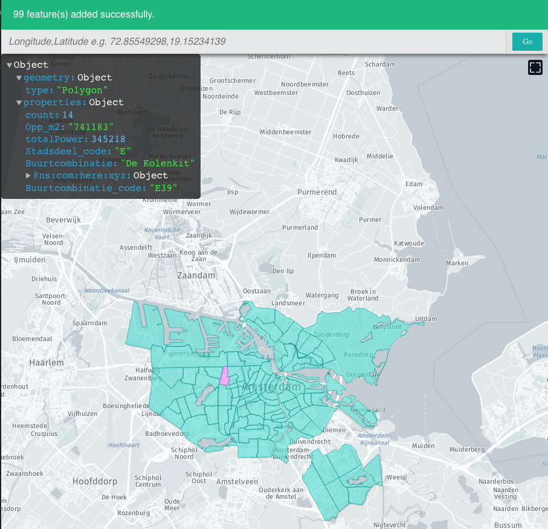

This tutorial shows you how to create a Tangram map using data from XYZ Spaces.
What you'll learn
- The basics of managing multiple XYZ spaces
- The fundamentals of using tiled data
- How to view your data in Tangram, using the tiled data endpoint
- How to query data from XYZ using bounding box queries.
Prerequisites
- Basic familiarity with the command line
- Basic familiarity with JavaScript
In this demo we'll download several public datasets for the city of Amsterdam and combine them in various ways in an interactive map.

In this demo, we'll use open data provided by the City of Amsterdam. We'll look at two sources of data: solar panel installations, and street trees.
The solar data is available to download, but the default visualization of the data is not particularly informative.

Let's also download some tree data and upload both to an XYZ space.
here xyz upload -f ZONNEPANELEN2017.json [SpaceID]
here xyz upload -f BOMEN.json [SpaceID]
To make the solar panel data more interpretable, let's try aggregating solar installations at the neighborhood level. To do so, we'll also need a dataset of Amsterdam neighborhood boundaries.

We'll write a node script to find the total solar power generated in each neighborhood and save it to a new GeoJSON file, using turf.
const fs = require('fs');
const turf = require('@turf/turf');
const NEIGHBORHOODS_FILE = './GEBIED_BUURTCOMBINATIES_EXWATER.json';
const SOLAR_FILE = './ZONNEPANELEN2017.json';
const OUT_FILE = './heatmap.json';
var nhoods = JSON.parse(fs.readFileSync(NEIGHBORHOODS_FILE, {encoding: 'utf8'}));
var solar = JSON.parse(fs.readFileSync(SOLAR_FILE, {encoding: 'utf8'}));
nhoods.features.forEach(function(feature) {
// get list of solar panels within neighborhood polygon
var points = turf.pointsWithinPolygon(solar, feature)
// add total number of panels as property to neighborhood
feature.properties.count = points.features.length;
// add total power generated as property to neighborhood
feature.properties.totalPower = 0;
points.features.forEach(function(point) {
feature.properties.totalPower += +point.properties.Vermogen;
});
});
fs.writeFileSync(OUT_FILE, JSON.stringify(nhoods), {encoding: 'utf8'})
We can run this preprocessing script with node process.js, which will generate a file named heatmap.json. Finally, let's upload this to an XYZ space.
here xyz upload -f heatmap.json [SpaceID]

If we want to see more datasets, Leaflet can't handle that many points. The XYZ API supports tiling vector data, which lets us only load the data in chunks so that we only get the data that we need to display at that moment. To use this tiled endpoint, we need a map client that supports tiling. We'll use Tangram, an open-source WebGL based map viewer.
First, we'll create a boilerplate Tangram map, just like we did with Leaflet. In this case, we'll need another file in addition to index.html: we'll need a scene.yaml file that defines the stylesheet and data sources for the map.
Now, to load our XYZ data on top of this Tangram map, we'll need to add a source to our scene file for each dataset. The tiled endpoint has this format: https://xyz.api.here.com/hub/spaces/[SpaceID]/tile/web/{z}_{x}_{y}.
sources:
solar:
url: https://xyz.api.here.com/hub/spaces/[SpaceID1]/tile/web/{z}_{x}_{y}
url_params:
access_token: [AccessToken]
clip: true
type: GeoJSON
neighborhoods:
url: https://xyz.api.here.com/hub/spaces/[SpaceID2]/tile/web/{z}_{x}_{y}
url_params:
access_token: [AccessToken]
clip: true
type: GeoJSON
trees:
url: https://xyz.api.here.com/hub/spaces/[SpaceID3]/tile/web/{z}_{x}_{y}
url_params:
access_token: [AccessToken]
clip: true
type: GeoJSON
Let's draw the solar data by adding a new layer to the stylesheet:
layers:
_solar:
data: {source: solar}
enabled: true
_all:
draw:
points:
collide: false
color: "#000000"
size: 5
Here's our basic map!

Tangram rendering
- Render the solar panels as circles of varying width and color.
_solar:
data: {source: solar}
enabled: true
_all:
draw:
points:
collide: false
color: |
function() {
if (feature.Functie == 'Wonen') {
return '#FF5306';
} else {
return '#FFC12B';
}
}
size: |
function() {
var value = +feature.Vermogen;
var size = Math.max(value/20000, 3);
// If we are zoomed in very far, make the points bigger
if ($zoom > 13) {
return Math.pow(2, $zoom - 13) * size;
}
return size;
}
Note that we can write normal Javascript to define how the layer is rendered!
- Show neighborhoods as a chloropleth based on total power generated.
_neighborhoods:
enabled: true
data: {source: neighborhoods}
draw:
_polygons_inlay:
interactive: true
order: global.sdk_order_under_water_0
color: |
function() {
var value = feature.totalPower;
var color = value >= 1267538 ? "rgba(127, 0, 0, 0.5)" :
value >= 1140784.2 ? "rgba(167, 4, 3, 0.5)" :
value >= 1014030.4 ? "rgba(200, 29, 19, 0.5)" :
value >= 887276.6 ? "rgba(224, 69, 48, 0.5)" :
value >= 760522.8 ? "rgba(241, 108, 73, 0.5)" :
value >= 633769 ? "rgba(250, 142, 93, 0.5)" :
value >= 507015.2 ? "rgba(253, 176, 122, 0.5)" :
value >= 380261.4 ? "rgba(253, 202, 148, 0.5)" :
value >= 253507.6 ? "rgba(253, 220, 175, 0.5)" :
value >= 126753.8 ? "rgba(254, 235, 207, 0.5)" :
"rgba(255, 247, 236, 0.3)";
return color
}
lines:
interactive: true
order: global.sdk_order_under_roads_0
color: black
width: 3px
Here we use the Tangram order property so that the neighborhood boundaries show up underneath roads and water features on the map.
- Draw trees with a variable size based on tree trunk diameter.
_trees:
enabled: true
data: {source: trees}
draw:
points:
collide: false
color: '#00A000'
size: |
function() {
var value = feature.Stamdiameter;
var size = value == "0 - 10 cm" ? 1.5 :
value == "11 - 20 cm" ? 2 :
value == "21 - 30 cm" ? 2.5 :
value == "31 - 50 cm" ? 3.25 :
value == "51 - 75 cm" ? 4 :
value == "76 - 100 cm" ? 5 :
1.5;
if ($zoom > 13) {
return Math.pow(1.5, $zoom - 13) * size;
}
return size;
}
Now we're starting to get somewhere!

It could still use a little more interactivity though.
Let's give the user the ability to draw a rectangle on the screen, and then use this as a bounding box query to the XYZ API. We're going to use a Leaflet extension called Leaflet-AreaSelect, which provides a nice user interface for drawing a bounding box. Then we trigger a query to the XYZ API's bbox endpoint:
'https://xyz.api.here.com/hub/spaces/[SpaceID]/bbox?access_token=[AccessToken]&west=' + west + '&south=' + south + '&east=' + east + '&north=' + north;
Then we can calculate the number of street trees within that box:
var bounds = this.getBounds();
var url = 'https://xyz.api.here.com/hub/spaces/[SpaceID]/bbox?access_token=[AccessToken]&west=' + bounds.getWest() + '&south=' + bounds.getSouth() + '&east=' + bounds.getEast() + '&north=' + bounds.getNorth();
fetch(url).then((response) => response.json()).then(function(data) {
var len = data.features.length;
L.popup().setLatLng(map.getCenter()).setContent(formatNumber(len) + ' trees selected').openOn(map);
});
Finally, we'll add some user interface controls for turning layers off and on.
<div id="controls">
<div id="solar" class="on" onclick="toggle('solar')">Solar installations</div>
<div id="neighborhoods" class="on" onclick="toggle('neighborhoods')">Neighborhoods</div>
<div id="trees" class="off" onclick="toggle('trees')">Trees</div>
<div id="counttrees" class="off" onclick="countTrees()">Count trees</div>
</div>
These buttons will trigger a Javascript function that toggles each layer off and on.
function toggle(layerName) {
layer.scene.config.layers["_" + layerName].enabled = !layer.scene.config.layers["_" + layerName].enabled;
document.getElementById(layerName).className = layer.scene.config.layers["_" + layerName].enabled ? "on" : "off";
layer.scene.updateConfig();
}
The "count trees" button will trigger a function that adds the bounding box selector to the map and triggers the bounding box query we prototyped earlier.
function countTrees() {
if (mode === 'trees') {
areaSelect.remove();
mode = 'solar';
} else {
mode = 'trees';
areaSelect.addTo(map);
areaSelect.on("change", function() {
var bounds = this.getBounds();
var url = 'https://xyz.api.here.com/hub/spaces/[SpaceID]/bbox?access_token=[AccessToken]&west=' + bounds.getWest() + '&south=' + bounds.getSouth() + '&east=' + bounds.getEast() + '&north=' + bounds.getNorth();
fetch(url).then((response) => response.json()).then(function(data) {
var len = data.features.length;
L.popup().setLatLng(map.getCenter()).setContent(formatNumber(len) + ' trees selected').openOn(map);
});
});
}
}
And that's our final map!